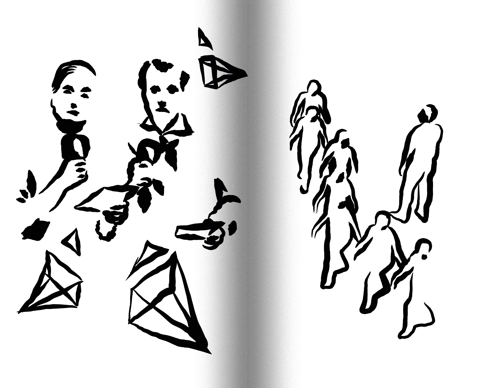
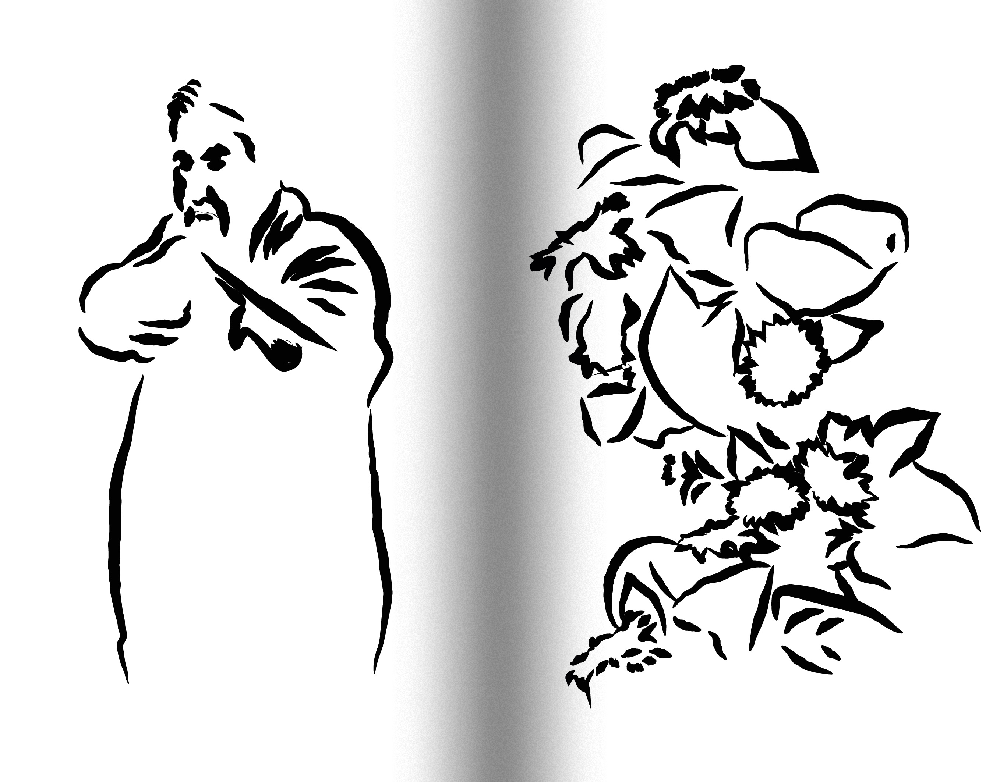
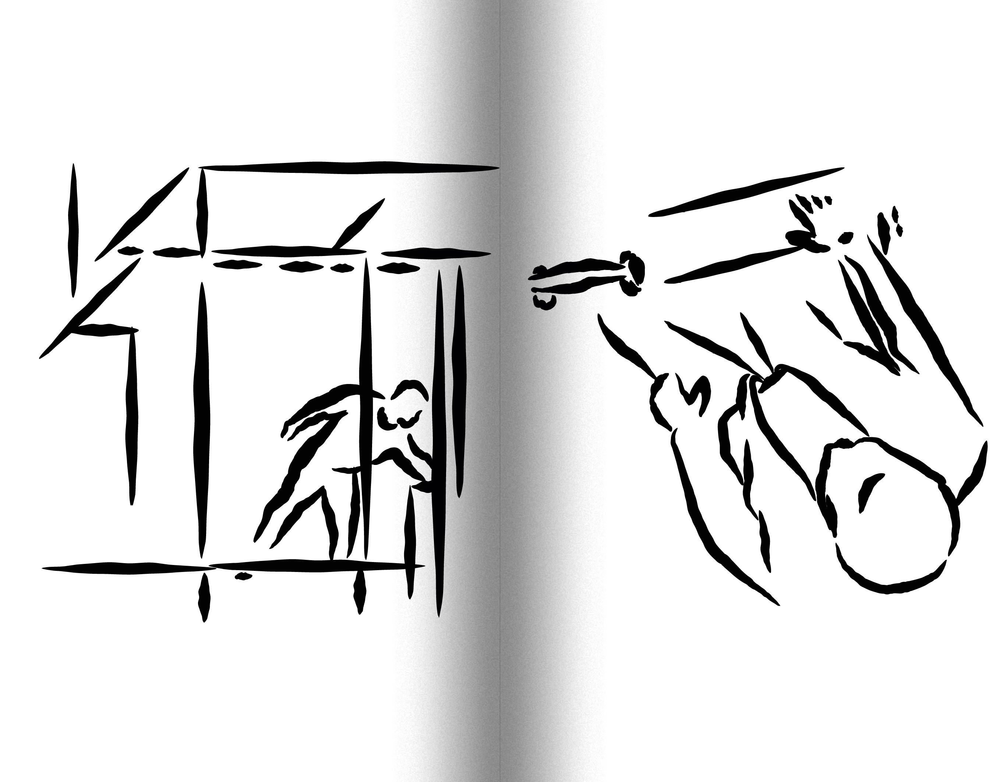
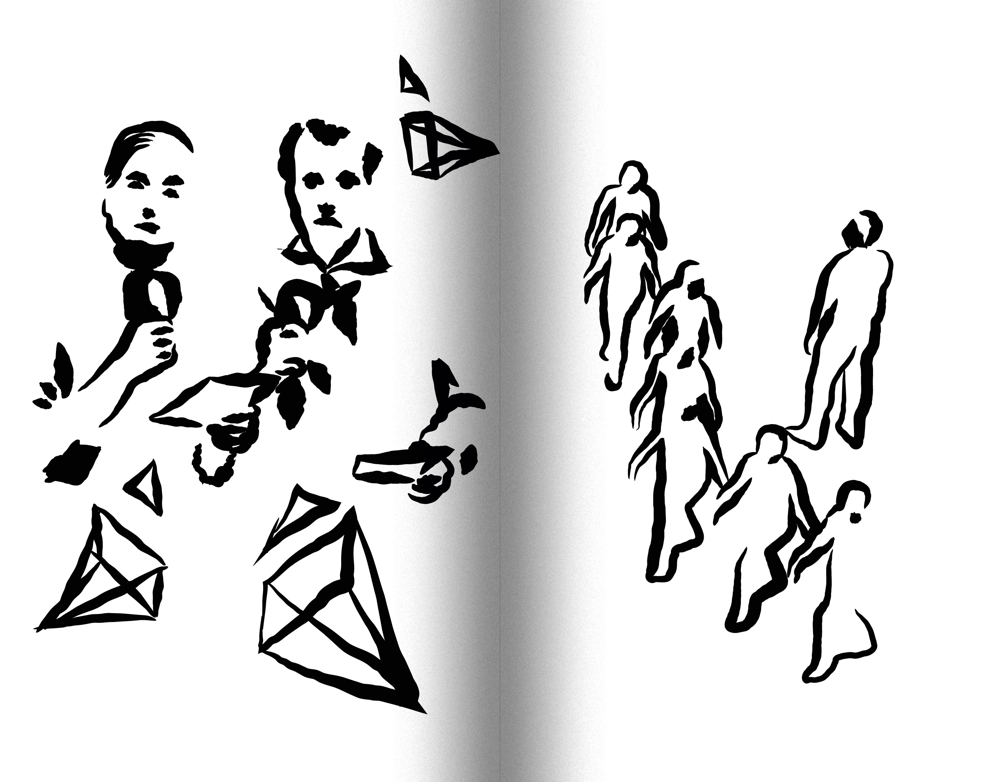
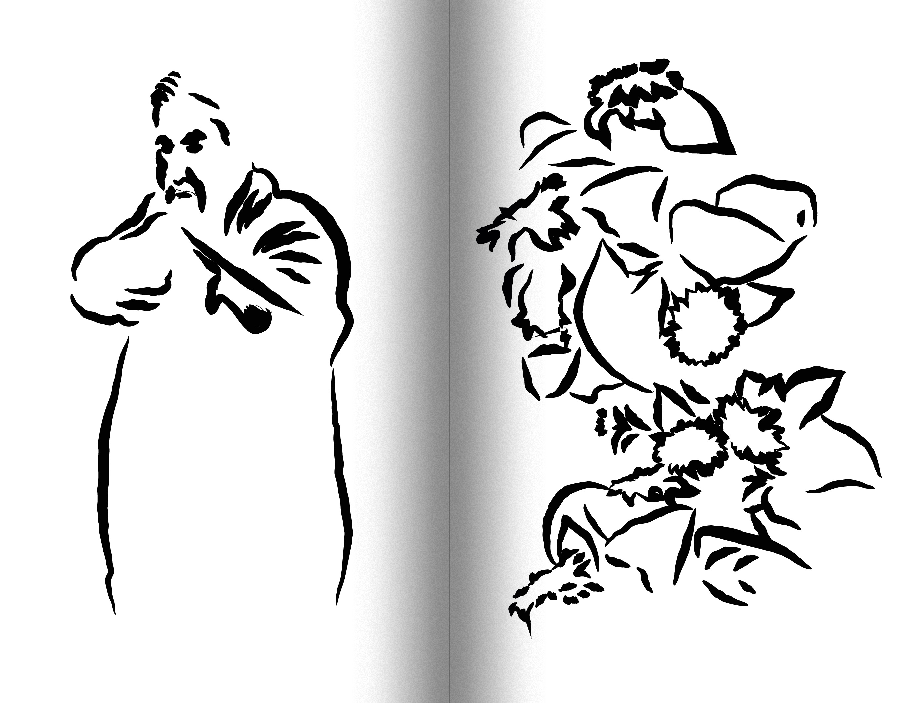
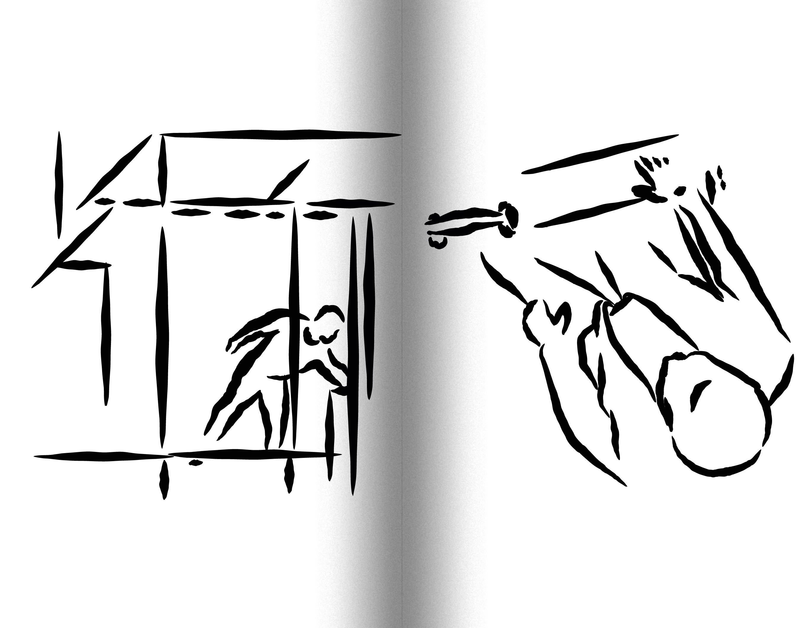

Version contre version, pratiques contemporaines de la contre enquête
Dans cette édition, je me consacre à l’étude d’enquêtes réalisées par l’agence de recherche Forensic Architecture. Cet écrit se concentre notamment sur les méthodes mises en œuvre par l’agence pour inventer de nouvelles manières de reconstituer un événement, de nouveaux dispositifs de témoignages, et ainsi amener à un déplacement du regard sur un fait passé. In this edition, I devote myself to the study of investigations conducted by the research agency Forensic Architecture. This text focuses in particular on the methods employed by the agency to invent new ways of reconstructing an event, new testimonial dispositifs, and thus to bring about a shift in how a past event is viewed.
Nancy
2025
édition book 11,5 x 18 cm, 158 pages
 




